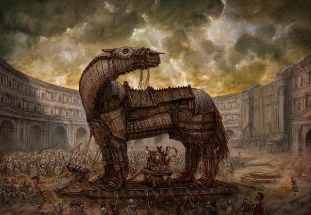

The Books
- The Illiad, by Homer, tells the story of the Trojan War;
- The Odyssey, by Homer, tells Odysseus journey back home after the War;
- Eneida, by Virgil, tells Eneas history.
The Characters
Helen of Troy: the face that launched a thousand ships;
- Helen is the greek princess, kidnaped by the trojan Paris;
- Achilles is the greatest greek warrior, which history appears in the Illiad;
- Odysseus is a valuable greek warrior which fights side-by-side with Achilles;
- Hector is the greatest trojan warrior, defeated by Achilles;
- Eneas is the second most valuable trojan warrior after Hector;

Laws
Universal laws, pretty much held true across all of human society:
- Nostalgia is the most powerful force in the universe;
- You want to persuade people, you need to know your audience;
- It is not good to be food. Human beings do not like the idea of becoming food for other creatures. It is a source of revulsion to us;
- Usually making leadership decisions means choosing between two bad things;
- When you tell a lie, you should tell a lie that is close to the truth;
- Secrecy creates intimacy – proprietary knowledge makes people closer to each other;
- A deep connection to the land is a common human expression. The idea that this land just kind of came to you, and it belongs to you in some sense. The idea of being dislocated and wandering, such as Odysseus embraces, is a little bit disconcerting, and to think that you have an actual rooted connection to a land is a nice thing to have;
- People at the top and people at the bottom of the power structure tend to embrace teleology (the idea that history is moving toward some predetermined end point).
Hesiod’s cosmology:
Chasm (Caos, emptyness), Earth (Gaia, Gaea), Eros (violent sexual desire) and Tartara (pluralized Tartarus) were allways there.
Earth and Sky (Heaven, Uranus) generates Kronos. Earth asks and Kronos cuts Sky’s genitals and hurls them to the sea. From a foam of these genitals, Athenas is born (this is the alpha stage of creation).
Kronos (Cronos, Saturn) and Rhead (Ground) begin beta stage of creation. Kronos starts swallowing all his childs (Hestia, Hear, Demeter, Hades and Poseidon), except the youngest one, Zeus. Rhea gives him a stone instead.
Zeus grows and overthrows Kronos, who vomit his childs. The stone regurgitaded is Omphalos, center of universe, oracle site of Delphi.
Zeus divides the Universe between himself (sky), Poseidon (sea), and Hades (underworld).
Zeus conceives the Olympians Apollo & Artemis (twins), Ares, and Athena.
Some remarks
Sneezing as a sign of a truth
Another divine moment of sneezing for the Greeks occurs in the story of Odysseus. His waiting wife Penelope, hearing Odysseus may be alive, says that he and his son would take revenge on the suitors if he were to return. At that moment, their son Telemachus sneezes loudly and Penelope laughs with joy, reassured that it is a sign from the gods.
Teiresias special power
In Ovid’s epic, Teiresias is especially noteworthy because he had sex as both a man and a woman.
Odysseus being Odysseus
In the dispute for Achilles’ arms, Ajax was a better warrior than Ulysses, but not a better speaker.
Toolbox
Functionalism
Bronisaw Malinowski
When cultures tell myths to themselves, what they’re doing is legitimizing certain kinds of underlying social and cultural norms that they hold dear.
So myths are myths because they serve a certain kind of function, and the function they serve is that they legitimize.
Origin is not important when it comes to functionalism.
Structuralism
Claude Levi-Strauss
Myth reflects human mind => binary representations of everything.
Which part of the narrative reflect one theme and which part reflect the oposite theme - the order doesn’t matter.
Find the two biological opositions (food / not food). These binary pairs do not reconciliate.
Psycho-analysis
Sigmund Freud
Myths are the dream of an entire culture. Myths dramatize events in every indiviual’s mental or psycological development.
Why in the world a culture would like to tell itself a myth like this?
Myth and ritual
Émile Durkheim & Jane Harisson
Collective effervescence: when human groups, amazing things happen. When we see connections between myths and rituals: that’s how they work.
Ritual present strange behavior, and when someone tries to explain them, they invent stories, and these stories are what we call myth.